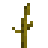

Cucurbita

Cucurbita is a mod created during Spooky Jam 2020. It introduces new mechanics centered around pumpkins, crafting, and fluid management. This mod adds a variety of crafting recipes that require both fluids and items, allowing players to create unique foods and special items.
New Blocks
Homemade Refinery
The Homemade Refinery is a straightforward block that processes a single item to produce a fluid and sometimes an additional item. Here's how to use it:
- Adding Items: Right-click with the item in hand.
- Extracting Items: Shift-right-click with an empty hand to remove the current item.
- Extracting Fluids: Use pipes from any pipe mod or a bucket once 1000 mB of fluid have been produced.
To delete fluids, see wands. To operate it, you need to apply heat. For a list of heat sources, see the Heat Values section.
Hollowed Pumpkin
The Hollowed Pumpkin is a specialized block that processes items with the help of heat to produce fluids and additional items. Here's how to use it:
- Adding Items: Right-click with the item in hand. The pumpkin has 16 slots available for item input.
- Extracting Items: Shift-right-click with an empty hand to remove the last added item.
- Inserting Fluids: Use a bucket on the pumpkin to insert any fluid. The pumpkin can store up to 2000 mB. It will also collect water when it's raining and the pumpkin can see the sky.
- Extracting Fluids: The fluids can't be extracted, just deleted using a wand.
- Finish Recipe: Use a wand when all ingredient are inserted and enough heat is supplied. For a list of heat sources, see the Heat Values section.
A Hollowed Pumpkin is made by using a Spoon on a Carved Pumpkin.
New Items
Wands
Wands are crafted from melon or pumpkin stems, which can be obtained by breaking a fully-grown stem with a hoe.
With these wands, you can complete a recipe in the Hollowed Pumpkin by simply right-clicking when the recipe is ready; shift-right-click toggles the mode to delete fluids, which will remove the fluid from both the refinery and the pumpkin, as well as any fluids placed in the world.
Spoons
A spoon can be used to hollow a Carved Pumpkin. For that, you just need to right-click it a few times. This generates Pumpkin Pulp, a crafting ingredient.
Food
| Icon | Name | Nutrition |
|---|---|---|
| Pumpkin Stew | ||
| Pumpkin Jam |
Crafting Ingredients
All of these items are used for crafting only, but they can also be used on a composter to fill it.
| Icon | Name | Composter Chance |
|---|---|---|
| Bio Mass | 60% | |
| Pumpkin Pulp | 20% | |
| Melon Stem | 30% | |
|  | Pumpkin Stem | 30% |
New Fluid
Plant Oil
Plant Oil can be obtained by pressing some items such as seeds in the Homemade Refinery. It can be placed into the world.
Heat Values
Currently Implemented Heat Sources
| Block | Heat |
|---|---|
| Torch | 200K |
| Soul Torch | 230K |
| Magma Block | 250K |
| Campfire | 300K |
| Soul Campfire | 450K |
| Fire | 750K |
| Soul Fire | 1000K |
| Lava | 1200K |